Grafana Guide: State Timeline, Status History, Logs and Text Panels
|
This content was generated with the assistance of AI and should be verified against the official documentation before being relied on in production. |
Checked on 2026-11-11 against Grafana 13.3.x.
What you build
You add five panels to the dashboard Bookshelf (guides). A state timeline shows whether the Bookshelf service is healthy or failing over time, and a status history shows which scrape targets Prometheus reached, both with value mappings that turn the numbers 0 and 1 into words and colours. A logs panel lists the error lines of the service from Loki, a traces panel draws one trace from Tempo, and a text panel with a heading works as the header of the dashboard.
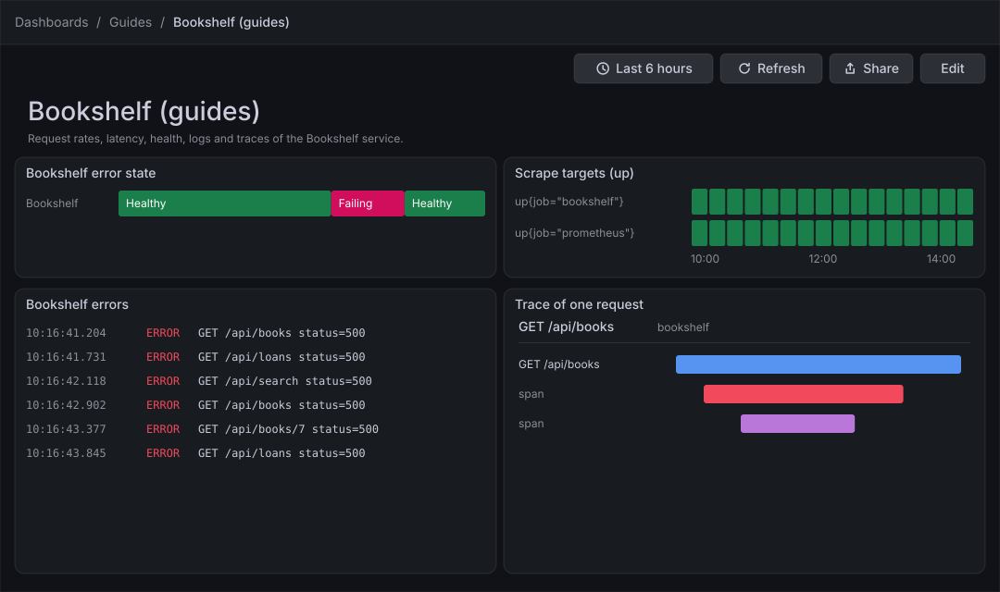
Before you start
-
Start the Grafana profile of the hands-on lab and wait about a minute:
cd lab docker compose --profile grafana up -d -
Open http://localhost:3000, sign in as
adminwith the passwordadmin, and click Skip when Grafana 13.3 asks you to update the default password. -
Do the guide Create a dashboard and the first panel first: it creates the folder Guides and the dashboard Bookshelf (guides) that this guide extends. The previous guide, Bar chart, pie, histogram and heatmap, shows the same way of building panels from queries.
-
The data sources Prometheus, Loki and Tempo are provisioned by the lab, so there is nothing to add. The load generator sends traffic to the Bookshelf service in its default mode, which gives the queries something to draw.
-
The guide was checked on Grafana Enterprise 13.3.0 (the free image, no licence key). Editing dashboards needs the Editor or Admin role of the organization;
adminhas it. -
The figures are drawings of the Grafana 13.3 user interface, not screenshots, so small details can differ from your screen. A highlighted box with a number marks the control of the step with the same number.
Steps
The panel editor used here is the one shown in the map of the first dashboard guide; come back to that map when a control is not where a figure shows it. Each panel is built in the panel editor and left with Back; the dashboard is saved once at the end.
Open the dashboard and add a panel
-
In the left navigation, click Dashboards, open the folder Guides and click Bookshelf (guides).
-
Click Edit at the top right.
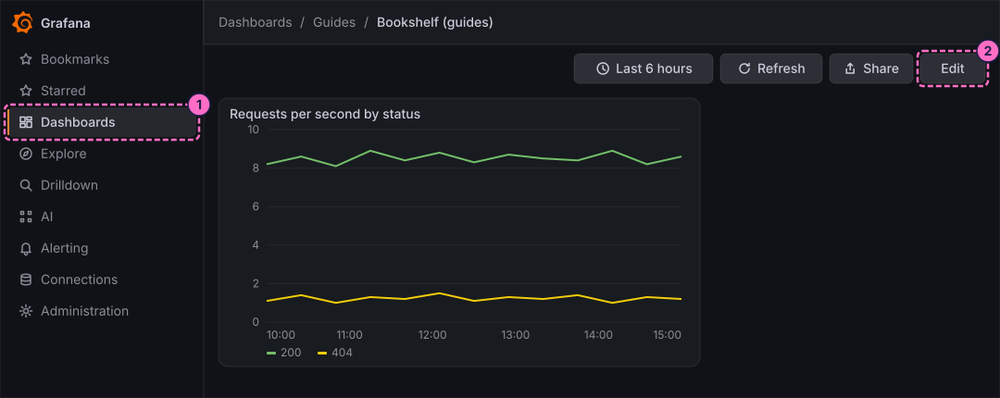
-
In the toolbar, click Add.
-
In the Add pane of the right sidebar, click the Panel tile.
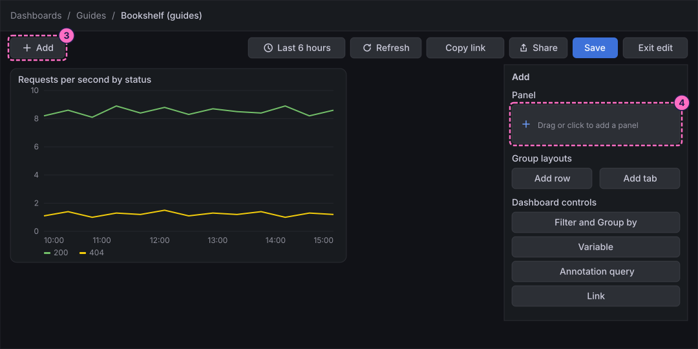
-
In the Panel pane that replaces the Add pane, click Edit visualization.
Show the error state as a state timeline
-
At the bottom of the panel editor, check that the Queries tab is selected and that Data source shows Prometheus.
-
In query A, click Code in the Builder / Code switch.
-
Click inside the query editor first, so that it has the focus, then type the query. It returns 1 while the Bookshelf service answers requests with a 5xx status and 0 otherwise (the editor wraps the long line, as the figure shows):
(sum(rate(http_server_requests_seconds_count{application="bookshelf",status=~"5.."}[1m])) or vector(0)) > bool 0 -
Click Run queries.
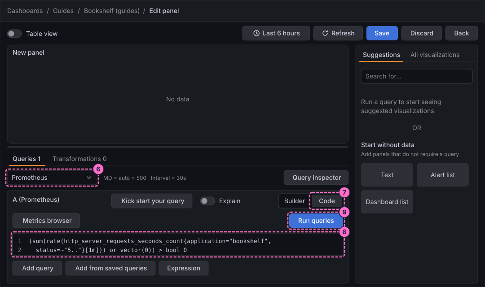
-
In the right column, click the All visualizations tab, then click State timeline ("State changes and durations").
-
The right column becomes the options pane, headed State timeline. Open Panel options and type
Bookshelf error statein Title. -
Open Value mappings and add a mapping for the value
0with the display textHealthyand the colour green. -
Add a second mapping for the value
1with the display textFailingand the colour red.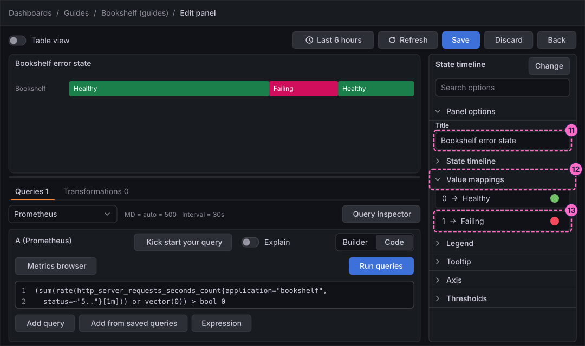
-
Click Back in the header of the editor. The 13.3 panel editor has no Apply button; the panel stays on the dashboard, which is saved at the end.
Show the scrape targets as a status history
-
Repeat steps 3 to 5: click Add, click the Panel tile and click Edit visualization.
-
In query A, click Code.
-
Click inside the query editor, then type the metric that Prometheus keeps for every scrape target, 1 when the target answered and 0 when it did not:
up -
Click Run queries.
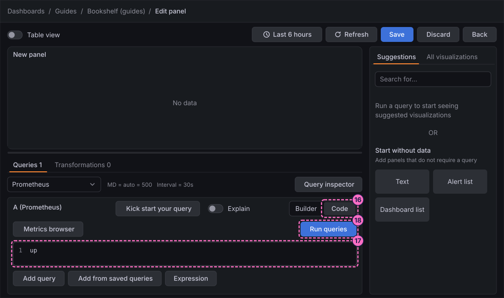
-
In the right column, click All visualizations, then Status history ("Periodic status history").
-
Under Panel options, type
Scrape targets (up)in Title. -
Open Value mappings and add a mapping for the value
1with the display textUpand the colour green. -
Add a second mapping for the value
0with the display textDownand the colour red.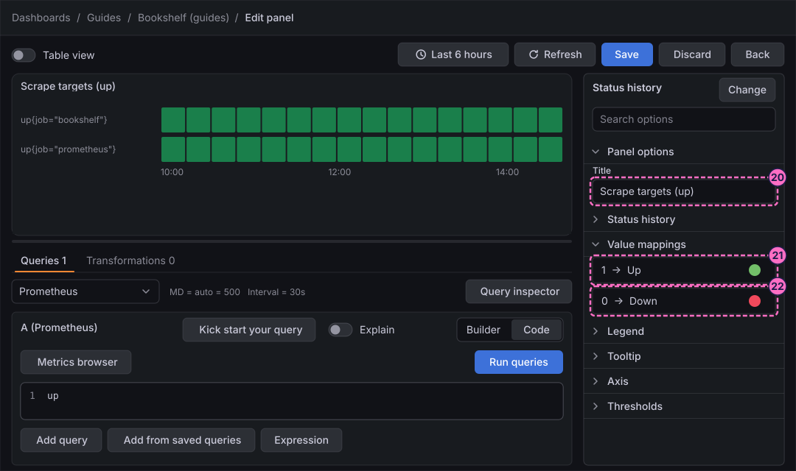
-
Click Back.
List the error lines in a logs panel
-
Repeat steps 3 to 5: click Add, click the Panel tile and click Edit visualization.
-
At the bottom of the editor, open the Data source picker and choose Loki.
-
If the query editor shows a Builder / Code switch, click Code.
-
Click inside the query editor, then type the query, which keeps the log lines whose JSON field
statusis 500 or more:{application="bookshelf"} | json | status >= 500 -
Click Run queries.
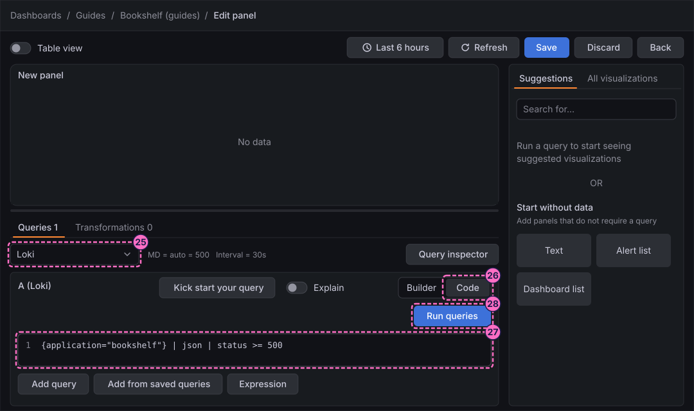
-
In the right column, click All visualizations, then Logs.
-
Under Panel options, type
Bookshelf errorsin Title. -
Open Logs and switch on Show timestamps.
-
Switch on Wrap lines.
-
Set Order to Newest first.
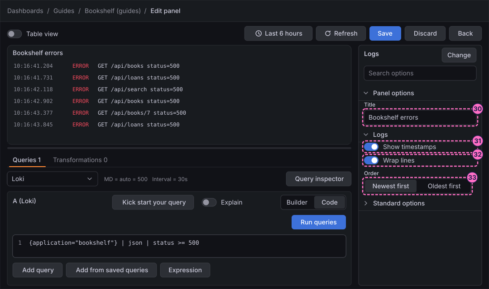
-
Click Back. Until the lab has produced errors the panel is empty; the check at the end of this guide provokes some.
Draw one trace in a traces panel
-
Repeat steps 3 to 5: click Add, click the Panel tile and click Edit visualization.
-
At the bottom of the editor, open the Data source picker and choose Tempo.
-
Paste a trace ID into the query field. Copy it from a log line: every line of the Bookshelf service carries a
trace_idfield, which you can read in the details of a line in the logs panel or in Explore with the data source Loki. -
Click Run queries.
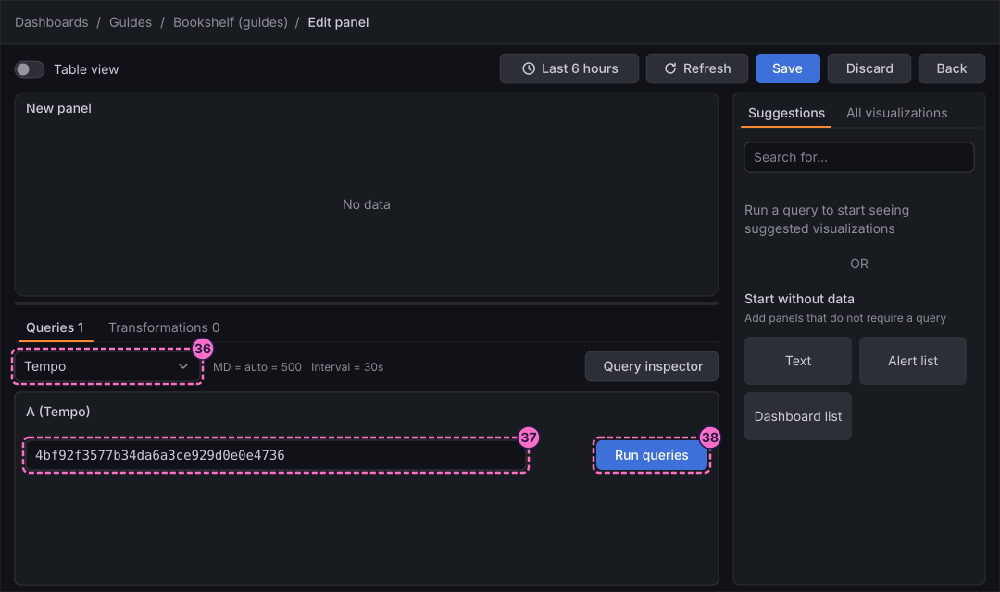
-
In the right column, click All visualizations, then Traces.
-
Under Panel options, type
Trace of one requestin Title. -
Click Back.
Add a text panel as the dashboard header
-
Repeat steps 3 to 5: click Add, click the Panel tile and click Edit visualization.
-
In the right column, under Start without data, click the Text card.
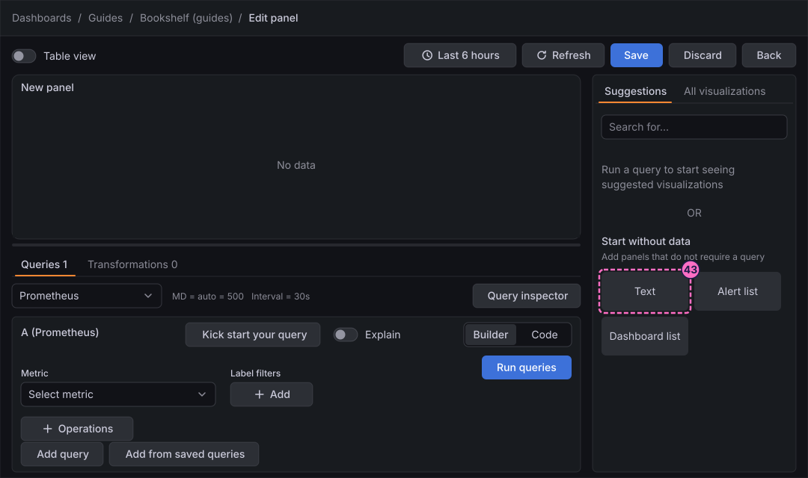
-
In the options pane, open Text and check that Mode is Markdown.
-
In Content, type the heading and the sentence:
# Bookshelf (guides) Request rates, latency, health, logs and traces of the Bookshelf service. -
Under Panel options, leave Title empty and switch on Transparent background, so that the panel looks like a heading and not like a box.
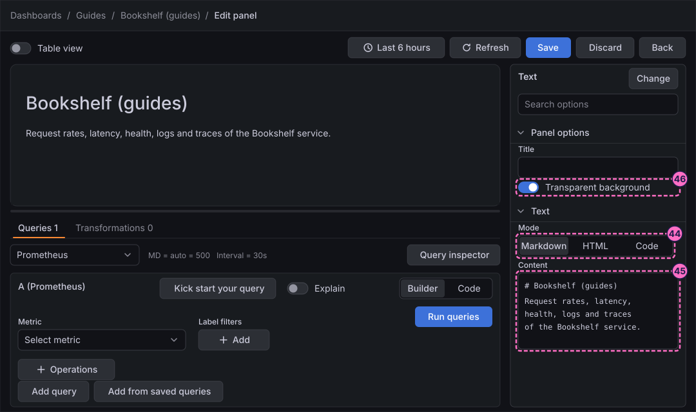
-
Click Save in the header of the editor.
-
In the Save dashboard drawer, click Save.
-
Click Back to return to the dashboard.
-
Click Exit edit. If Grafana 13.3.0 shows the dialog Unsaved changes, click Save and click Save again in the drawer, as in the first dashboard guide.
Check the result
Open Dashboards → Guides → Bookshelf (guides). The text panel shows the heading, the state timeline is Healthy for the whole range, the status history shows one row of Up cells for each scrape target, and the traces panel shows the trace you pasted. The logs panel stays empty while the service answers without errors.
Force errors, wait a minute and press Refresh. The state timeline turns to Failing and the logs panel lists lines with a status of 500:
curl -X POST localhost:8090/mode/failingRestore normal traffic afterwards; the state timeline returns to Healthy about a minute later, when the one-minute rate window has drained. Check the mode of the load generator at any time:
curl -X POST localhost:8090/mode/normal
curl localhost:8090/Variations
-
Draw the services of the whole lab: remove the label filter from the logs query to list every application, or filter the status history with a
joblabel to keep one target. -
Show the values inside the state timeline and merge equal values: the options Show values and Merge equal consecutive values of the group State timeline control it.
-
Turn the log lines into a table of fields: switch on Enable columns for displayed fields in the group Logs.
-
Narrow the traces panel to the slow spans with the options of the group Span filters.
-
Use HTML instead of Markdown as the Mode of the text panel when the header needs a link or an image.
What can go wrong
| Symptom | Cause | Fix |
|---|---|---|
The state timeline or the status history shows the numbers 0 and 1 instead of words |
The value mappings were not added, or the value typed in a mapping does not match the number of the query. |
Open Value mappings and check that the values are exactly |
The status history says Too many points to visualize properly |
The time range holds more points than the panel can draw. |
Pick a shorter range, for example the last hour, with the time picker. |
The logs panel is empty |
The service has answered without errors so far, or the lab started less than a minute ago. |
Send |
The traces panel is empty or reports an error |
The trace ID was cut when copying, or the trace is older than the time range or no longer stored. |
Copy a fresh |
The text panel shows the characters of the heading instead of a heading |
Mode is HTML or Code. |
Set Mode to Markdown in the group Text. |
Exit edit keeps showing Unsaved changes |
Grafana 13.3.0 raises the dialog even after a save. |
Click Save, and Save again in the drawer; the dialog does not return once edit mode has closed. |
Clean up
Keep the panels: later guides on this dashboard build on them. To remove them, open the dashboard, click Edit, open the menu of each panel and delete it, then save the dashboard.
Where to go next
-
Previous guide: Bar chart, pie, histogram and heatmap.
-
Next guide: Geomap, which places values on a world map.
-
Reference: Grafana Logs, Traces and Special Panels covers every option of these visualizations.